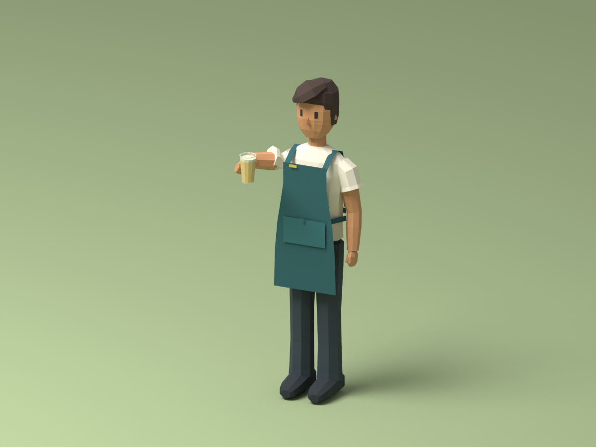
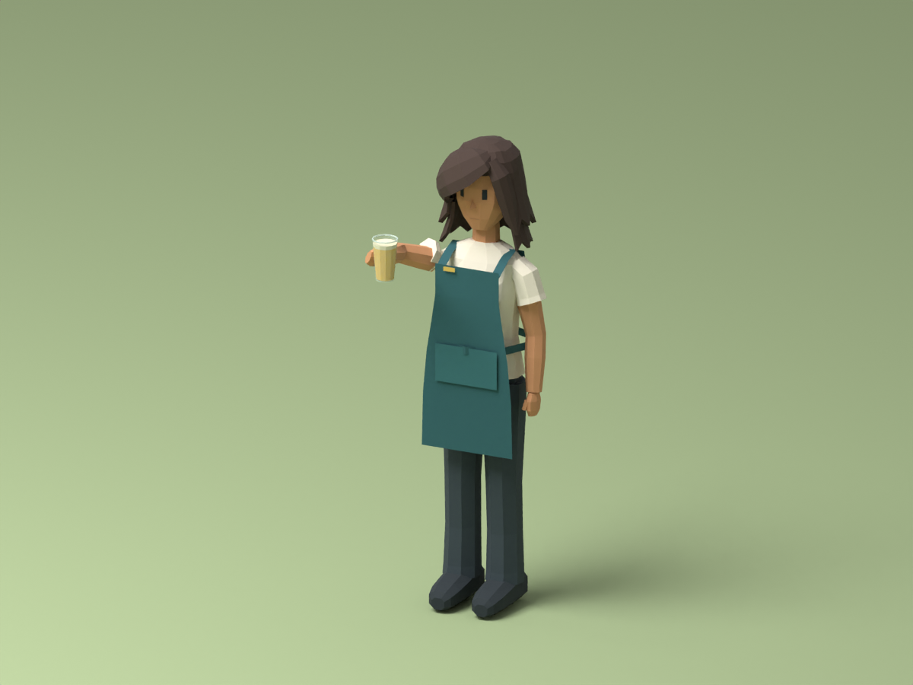
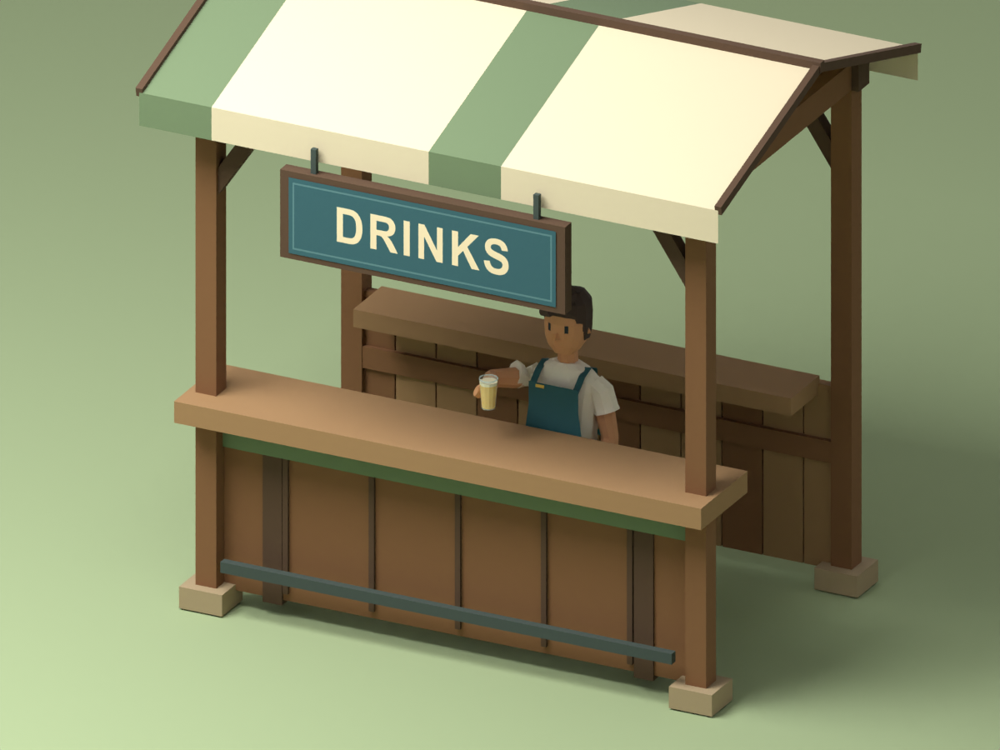
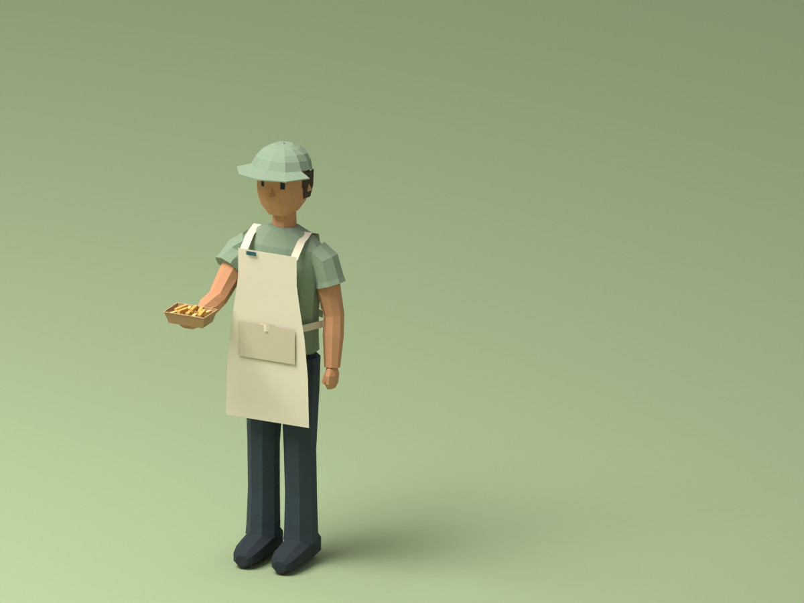
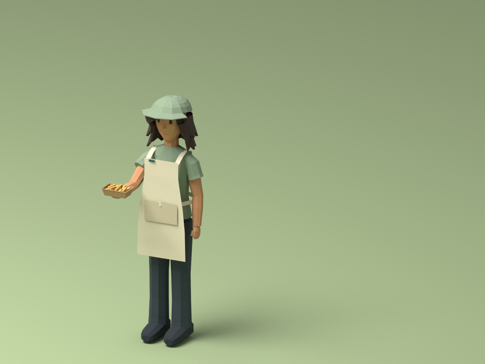
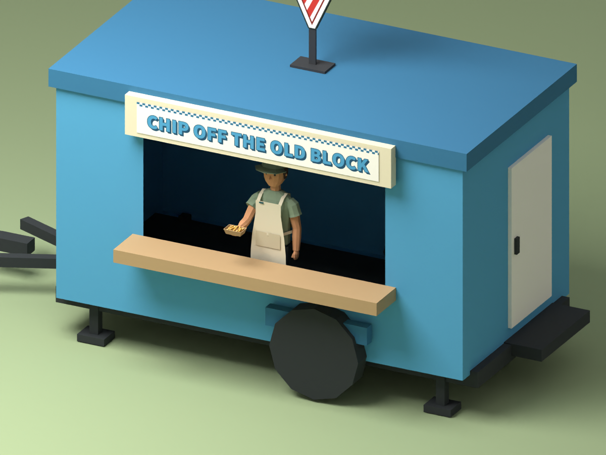
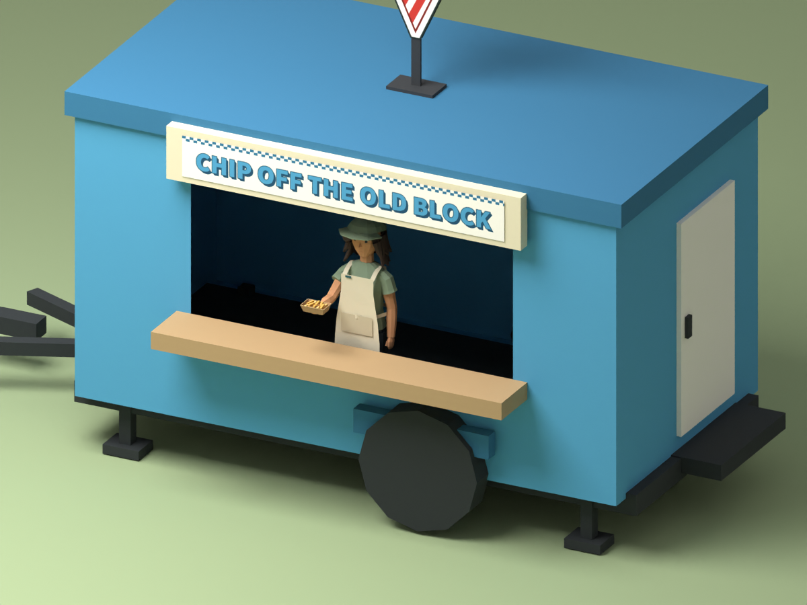

Actual model renders, not concept artwork. Four variants on the existing adult rig, with baked serving clips and unchanged existing held items. Builder handoff · Exports and hashes
Food van revision opens only the existing serving area. Head/cap visibility is limited by the original fascia from the high camera; the rear wall naturally hides the server in rear views. Frames show one server per vendor. Integration remains Builder-owned.



Open full-resolution images to assess actual pixel scale. Distant detail is intentionally small; identity relies on apron colour and motion.
Open full-resolution images to assess actual pixel scale. Distant detail is intentionally small; identity relies on apron colour and motion.




Open full-resolution images to assess actual pixel scale. Distant detail is intentionally small; identity relies on apron colour and motion.
Open full-resolution images to assess actual pixel scale. Distant detail is intentionally small; identity relies on apron colour and motion.
Camera elevation 38.853°, yaw 45/135/225/315°, exact source scale. Controlled Blender lighting; final integrated game lighting and transaction/pause behavior require Builder validation.